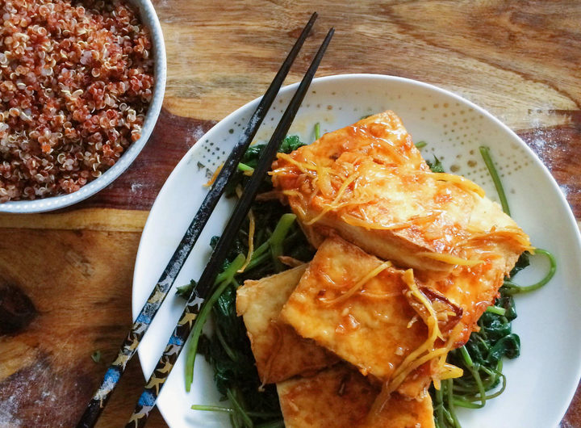
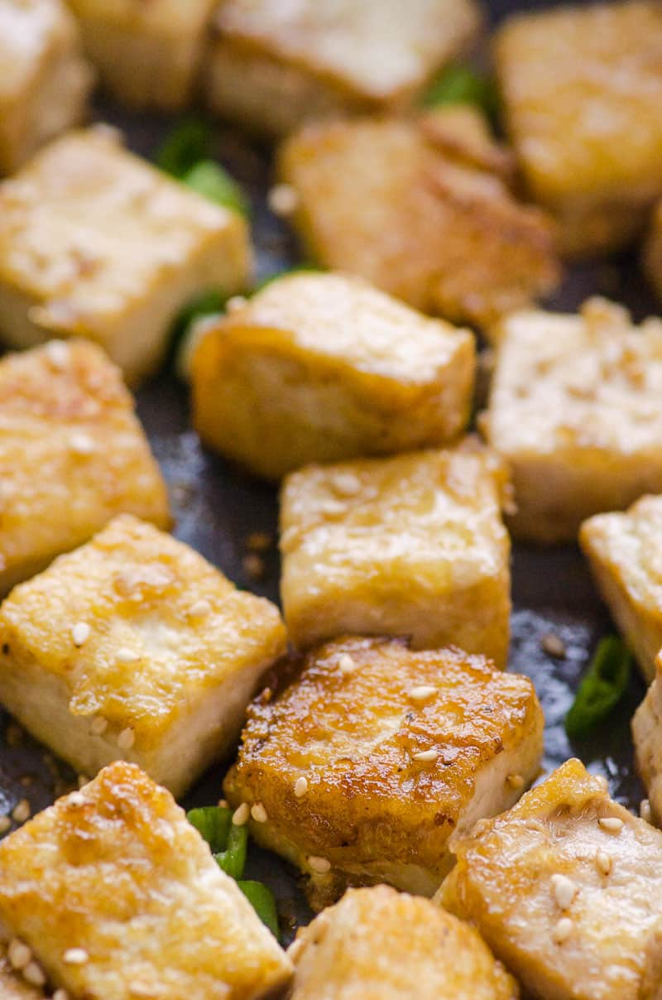
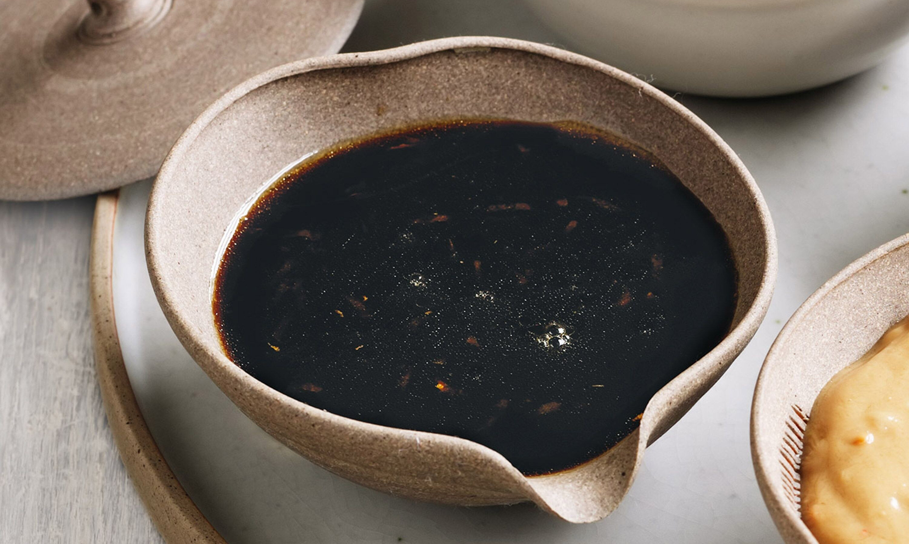
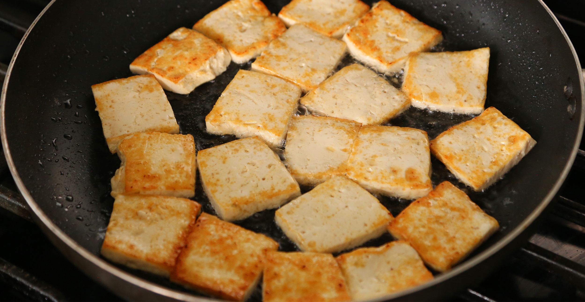

Fried Silken Tofu
with Chili Lime Ginger Sauce
Yield: 12 - 14 pieces
Cook Time: 20 min
Prep Time: 10 min
In particular...
This is one of those recipes that always impresses. The flavors are perfect together and I always feel like I have never made enough—especially when my son comes back for thirds! If you have ever eaten Sweet and Spicy Silken fried tofu from a traditional street vendor in Asia you’ll appreciate this recipe, as it utilizes the same cooking techniques to bring you a wonderful rich flavor.
Quick and super easy, once you gain confidence making the sauce you will become a pro in no time—which is good because if your family is anything like mine, they will be asking for it often.

You'll need...
Sauce
- 2 thumb-size pieces of young ginger
cut into very thin long strips
- 3 large fresh garlic cloves, diced (not minced)
- 1 Tbsp sesame oil
- 2 Tbsp soy sauce
- 2 Tbsp rice vinegar
- 4 Tbsp water
- 1 Tbsp sugar
- 2 tsp tomato paste
- 1 tsp chili sauce or sweet chili sauce
- Juice of 1 lime
Tofu
- 2 x 15 oz blocks of silken tofu
- Flour for dusting
- 2 Tbsp sesame oil

Sauce Steps
- In a small pan, gently fry the sliced ginger and diced garlic in the sesame oil until soft and aromatic; do not burn your garlic. Lower the heat before adding the soy sauce, rice vinegar, water, sugar, tomato paste, chili sauce and lime juice. Stir well and let simmer for a few minutes. Taste test. If it’s too intense add a little water, if it lacks flavor, add some more soy sauce, then let simmer for another minute.

Tofu Steps
- I use rice flour or plain flour but I’m sure you can use other flours if you want to experiment. Choose a sensible silken tofu as some are so soft that they are not meant for cooking.
- Slice the tofu into thick slices; I like to cut them about ¾-inch thick so they don’t fall apart.
- Place the sliced tofu on a paper towel and pat off excess liquid. Dust the tofu pieces with the flour to form a light coating.
- In a large non-stick pan or iron skillet (my preferred choice), heat 2 Tbsp of sesame oil. Place your tofu in the sesame oil and fry over medium heat for 2 minutes on each side or till golden brown and crispy.
- Drizzle the dressing over the tofu while it is still steaming hot. Serve with your favorite steamed Chinese greens or bowl of grains.
- This dish is best eaten right away while it is still hot.